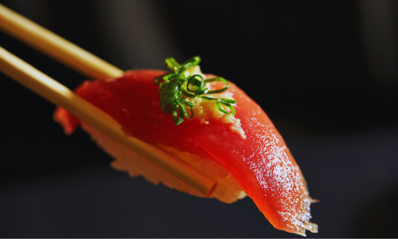

和 招 縁 の 思 い
数ある店舗の中から「和招縁」にご関心頂き誠にありがとうございます。
和招縁は、食生活がおびやかされている現代、
安全で身体 に良い物を吟味し四季「旬」を大切に、
お客様に和みながら美味しく料理を食べて頂きたい。
和招縁でお会いする方々に素敵なご縁が出来る場所であってほしい。
そんな思いを込めて和招縁を開業 いたしました。
和招縁は、食生活がおびやかされている現代、
安全で身体 に良い物を吟味し四季「旬」を大切に、
お客様に和みながら美味しく料理を食べて頂きたい。
和招縁でお会いする方々に素敵なご縁が出来る場所であってほしい。
そんな思いを込めて和招縁を開業 いたしました。
初めての方へ
ホームページをご覧頂き有難うございます。
初めての方でも気軽にお立ち寄りいただき「また来たい!」と思える店を目指しスタッフ一同日々精進しております。
ぜひ、当店ならではの味わいとおもてなしを心ゆくまでお楽しみください。
皆様のご来店を心よりお待ちしております。
当店は二店舗ございますので、以下のボタンよりご希望の店舗をご確認下さい。
初めての方でも気軽にお立ち寄りいただき「また来たい!」と思える店を目指しスタッフ一同日々精進しております。
ぜひ、当店ならではの味わいとおもてなしを心ゆくまでお楽しみください。
皆様のご来店を心よりお待ちしております。
当店は二店舗ございますので、以下のボタンよりご希望の店舗をご確認下さい。

塩町店のコンセプト
鮨をメインに提供しております。店主は瀬戸内海の離島(家島)で生まれ、島の豊かな海で獲れる新鮮な魚介で育ちました。その自慢の地元の恵みを活かした本物のおいしさと店主のひと手間加えた熟練の技が光る握りを真心こめてご提供いたします。目の前で職人の技が見れるカウンターがおすすめです。掘りごたつのテーブル席も完備しております。

福中店のコンセプト
活魚・一品料理をメインに提供しております。瀬戸内海の荒波にもまれ育った活魚を水槽から直前に出し調理いたします。お客様のお好みの調理法「生・焼・煮・揚・蒸・にぎり」にて天然魚の本当の旨みを色々な形でご堪 नोन下さい。二階、三階は完全個室です。接待や大切な方とのお食事など幅広いシーンにおすすめです。一階はカウンターも完備しております。
店舗ギャラリー
塩町店


福中店